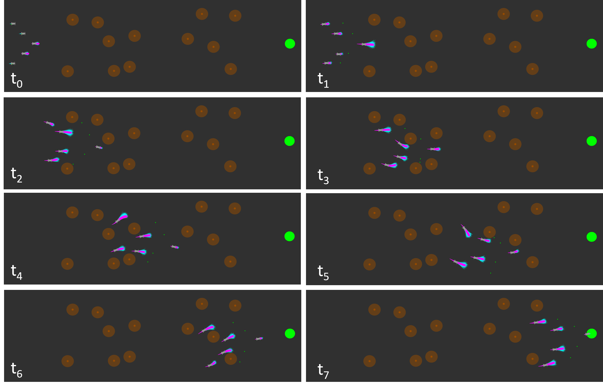

↝
Multi-Robot Motion Planning
Planning algorithms for coordinated robot teams, including formation constraints, long-range coordination, and multi-agent decision-making in complex environments.
Robotics · Planning · Control · Multi-Agent Autonomy
I am a Ph.D. student in Mechanical Engineering and Robotics at Johns Hopkins University. My research focuses on multi-robot motion planning, stochastic planning, nonlinear model predictive control, and coordinated autonomy for robots operating in uncertain environments.
Open to research collaborations
PhD Student · Agile and Intelligent Robotics Lab · Johns Hopkins University
About
I am a Ph.D. student in Mechanical Engineering at Johns Hopkins University. My research focuses on motion planning and control for autonomous robotic systems, with an emphasis on multi-agent coordination, stochastic planning, nonlinear model predictive control, and robust decision-making under uncertainty.
I am particularly interested in algorithms that allow teams of robots to coordinate complex maneuvers in challenging environments, including off-road and perception-limited settings. My work combines ideas from optimal control, feedback motion planning, probabilistic reasoning, and robotic systems.
Prior to my Ph.D., I completed a B.S. in Mechanical Engineering and an M.S.E. in Robotics at Johns Hopkins. I have also worked on medical device design, computer vision-based testing, autonomous ultrasound data transfer pipelines, and wearable sensing systems.
Research Focus
Planning algorithms for coordinated robot teams, including formation constraints, long-range coordination, and multi-agent decision-making in complex environments.
Feedback motion planning methods using probably approximately correct nonlinear model predictive control for robust planning under model, perception, and environmental uncertainty.
Stochastic planning and perception-informed value functions for navigation, off-road autonomy, and reliable robotic behavior in uncertain real-world settings.
Selected Work

First-Author Research
This project develops feedback motion planning methods for multi-agent robotic systems using probably approximately correct nonlinear model predictive control. The work focuses on robust coordination under uncertainty and provides tools for planning with learned or uncertain dynamics, perception, and constraints.

First-Author Research
This project studies multimodal stochastic planning methods for navigation and coordinated robot behavior. The work explores how autonomous systems can reason over multiple possible futures and select robust behaviors in uncertain environments.
Academic Output
M. Gonzales, E. Oh, and J. Moore. arXiv preprint arXiv:2509.19168.
For a complete publication list, see my Google Scholar profile .
CV
2023 — Expected 2027
Johns Hopkins University
Research focus: multi-agent motion planning, stochastic planning, nonlinear model predictive control, and coordinated robot autonomy.
2022 — 2023
Johns Hopkins University
Thesis: Multi-Agent Feedback Motion Planning Using Probably Approximately Correct Nonlinear Model Predictive Control.
2018 — 2022
Johns Hopkins University
Coursework included robotics, controls, mechatronics, artificial intelligence, haptic interfaces, and computer-integrated surgery.
Jan. 2022 — Present
Johns Hopkins University
Developing planning and control algorithms for autonomous robotic systems, with emphasis on multi-agent coordination, stochastic planning, nonlinear model predictive control, and decision-making under uncertainty.
May 2023 — Aug. 2023
Johns Hopkins University Applied Physics Laboratory
Adapted a simulated experimental robotics setup into a real-world hardware setup for physical testing and evaluation.
Aug. 2021 — Dec. 2022
CraniUS LLC
Designed biocompatible, MRI-safe components for a first-in-human medical device, fabricated prototype components, and developed computer vision-based testing tools for verification workflows.
Robotics & Control
Programming
Computer Vision & Tools
Mechanical Design & Fabrication
Robotics & Control
Programming
Computer Vision & Tools
Mechanical Design & Fabrication
Contact
Feel free to reach out about research, projects, internships, collaborations, or PhD-related opportunities.